Sim-robot-learning · 归档于 2026-10-23
AdaDex
Learning Adaptable Dexterous Skills via Hybrid Dexterous Mimicking
归档到 Robot learning in simulation：用 RL 从几秒人手动作学多指手技能，再做 sim-to-sim / sim-to-real，正是这个项目的范围；视频 → HOI reference 的 real2sim 部分也关联 Agent-centric-real-to-sim。
TL;DR
- Problem
- 从几秒人手示范学灵巧技能，现有两条路各缺一半：motion tracking 像人但只会照抄那一段，goal-reaching RL 能去任意目标但抓法不像人、不能用。
- Idea
- Hybrid Dexterous Mimicking：一个 goal-conditioned policy 同时在 TrackEnv（dense 跟踪人手 → 学人的做法）和 GenEnv（加噪 goal + sparse 成功奖励 → 学泛化）里训练；推理只要 goal。
- Result
- 12 个 GRAB 物体、没见过的动作上 tracking progress 80.02%（ManipTrans 7.28%，SimToolReal 13.68%）；random goal progress 51.80%（SimToolReal 44.60%）；零样本进 MuJoCo，并在真实 xArm6 + XHand 上运行。
Problem
像人的抓法和去新目标的能力，现有方法只能二选一
Running example · 后面每个 stage 都跟着它走
Hammer（GRAB s1_hammer_use_1）：一段 5.88 s、353 帧 @ 60 Hz 的人手 mocap，人拿起锤子并使用（Table 6）；论文 §1 正是用“拿起桌上的锤子去敲钉子”来讲问题。
→ 想要：一个锤子 skill，保留人的握法、in-hand 换握和挥锤，又能敲新位置的钉子（downstream 的 Hammer 任务：敲两个不同位置的钉子，App. G）。
flowchart LR IN["例子输入
锤子 clip 5.88 s"] --> A1["Motion tracking
ManipTrans"] A1 --> A2["dense reward 跟 353 帧
继承握法、换握、挥锤"] A2 --> AX["钉子换位置：无法适应
random goal SR 0.00%"]:::gap IN --> B1["Goal-reaching RL
SimToolReal"] B1 --> B2["sparse reward：锤子
到目标位姿就给分"] B2 --> BX["抓锤头或捏中段：敲不了
腕朝向误差 65.30°"]:::gap
“坏在哪”是 §1 拿锤子做的分析（推断，非逐物体实测）；数字是 12 个 GRAB 物体的平均（Table 1 seen、Table 2），没单列 hammer；AdaDex 对应 11.45°、SR 27.08%。
根本问题：人的做法（怎么握、怎么换握）只能从 dense tracking 学到，去新目标的能力只能从加噪 goal + sparse reward 学到，现有方法各只用一种训练信号。 这篇的切入点：两者是同一个 goal-conditioned 问题（goal = 腕 + 物体位姿），只差 goal 从哪来、奖励怎么给，所以让一个 policy 同时在两种环境里训练。
Related work
| 相关工作 | 解决什么 | 怎么解决 | 和本文的区别 |
|---|---|---|---|
| 同一问题 · 别的解法 | |||
| Motion tracking ManipTrans, DexMachina, DexTrack, Dexplore | 在机器人手上复现一段人手-物体 clip | dense tracking reward 的 RL；推理时也要整条 reference | 只会照抄这一段 → 本文留它作 TrackEnv，再加 GenEnv；推理只要 goal |
| Goal-reaching RL Dex4D, SimToolReal | 把任意物体送到任意目标位姿 | object-centric sparse 成功奖励，无人手先验 | 只管到哪、不管怎么做，抓法不自然 → 本文同样的 GenEnv，外加 TrackEnv 给先验 |
| Teleop + behavior cloning DexCap, DexUMI, GR-Dexter | 从人的示范学灵巧操作 | 手套、外骨骼等采 in-domain 示范，再 behavior cloning | 出了示范分布就泛化差，动态动作难采 → 本文只要几秒人手动作 + 仿真 RL |
| Grasp synthesis、专用 RL DexGraspNet, Lightning Grasp, UniDexGrasp++, DexNDM | 单一类技能：静态抓取或 in-hand 旋转 | 接触优化合成抓取；或单个任务的 RL | 多限于抓取，开环优化遇扰动就脆 → 本文一个闭环 recipe 学抓取、换握、抛接 |
| 相似做法 · 别的问题 | |||
| Hybrid imitation（humanoid） HIL, GfR | humanoid parkour 等动作，要超出 reference | reference tracking 和 sparse goal 合在一个多任务 RL 里 | 做的是 humanoid → 本文用在多指手 + 物体：goal 是腕和物体位姿 |
来源：论文 §2（§2.1、§2.2），未另行检索。Real2Sim 的对比方法 Do-As-I-Do、EgoInfinity 不在 §2，见 Stage 1。
Level 1 · Big picture
一个 goal-conditioned policy，同时练“像人”和“去哪都行”
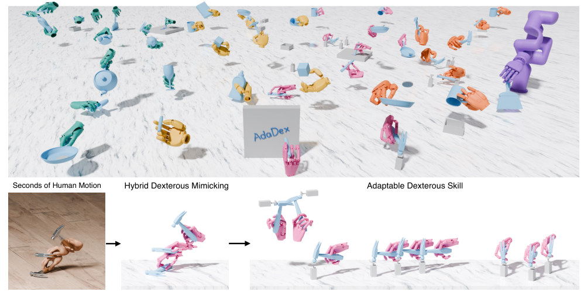
怎么读这张图
- 上半幅：同一套方法学出的各种技能；手的颜色对应 Fig. 5 图例（青 Arti-MANO、黄 XHAND、粉 Wuji、橙 Sharpa、紫 XHAND + xArm），中间白板上的 AdaDex 是 Marker 任务写的字。
- 下排左 “Seconds of Human Motion”：几秒人手拿起锤子的动作，就是例子这一类输入。
- 下排中 “Hybrid Dexterous Mimicking”：粉色机器人手（按图例是 Wuji）照着这段动作，把平放的锤子拿起、翻到手里。
- 下排右 “Adaptable Dexterous Skill”：学成的锤子 skill 去敲多个不同位置的灰色小柱；人手 clip 里没有这些位置，这就是“钉子换位置”。
flowchart LR I["Input
锤子 clip 5.88 s"] --> R["HOI reference τ̂
腕、手、锤子位姿"] R --> H["Hybrid Dexterous Mimicking
TrackEnv + GenEnv"]:::win H --> O["Output：π(a | s, g)
给 goal 就去敲"]
Level 2 · Stages
6 个 stage，中间是一个共享 policy
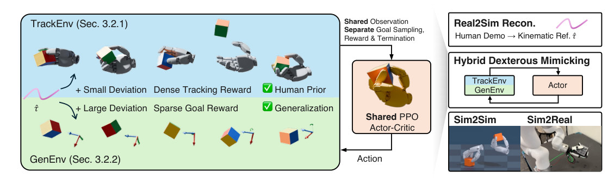
怎么读这张图
- 右栏上 “Real2Sim Recon.”：Human Demo → Kinematic Ref. τ̂，即 Stage 1；锤子来自 GRAB mocap，直接接在这一步的输出。
- 左栏蓝色 “TrackEnv (Sec. 3.2.1)”：τ̂ + Small Deviation、Dense Tracking Reward → ✓ Human Prior，即 Stage 3。
- 左栏绿色 “GenEnv (Sec. 3.2.2)”：τ̂ + Large Deviation、Sparse Goal Reward → ✓ Generalization；方块旁的坐标轴是目标位姿，即 Stage 4。
- 中间 “Shared PPO Actor-Critic”：上方写着 Shared Observation、Separate Goal Sampling, Reward & Termination：两种环境只在 goal、reward、termination 上不同。
- 右栏下 “Sim2Sim / Sim2Real”：同一个 policy 进 MuJoCo 和真机，即 Stage 6。图里没画 Stage 2（retarget）和 Stage 5（coding agent 出 goal）。
flowchart TD S1["1 · Real2Sim reference
锤子 353 帧 τ̂"] --> S2["2 · Retarget
MANO → Arti-MANO"] S2 --> S3["3 · TrackEnv
跟着人手挥锤"]:::win S2 --> S4["4 · GenEnv
锤子目标随机挪"]:::win S3 --> P["共享 policy π(a | s, g)
锤子 skill"] S4 --> P P --> S5["5 · Coding agent 出 goal
敲两个新位置的钉子"] P --> S6["6 · Sim2Sim / Sim2Real
MuJoCo、xArm6 + XHand"] click S1 href "#stage-1" click S2 href "#stage-2" click S3 href "#stage-3" click S4 href "#stage-4" click P href "#stage-all" click S5 href "#stage-5" click S6 href "#stage-6"
点击 stage 展开 Level 3 细节；贯穿全程的共享 policy 见 共享 policy 和 goal 接口。
Level 3 · Details
每个 stage 的细节
Stage 1 Real2Sim reference 人手-物体 clip（mocap 或 RGB-D 视频）→ HOI reference τ̂ + 物体 mesh
- Why：整个方法只吃一条 τ̂；mocap 现成可用，日常视频要先重建成仿真能跟踪的 reference。
- How：τ̂ = 每帧腕位姿 x̂ʷ、MANO 手参数 q̂ʰ、物体位姿 x̂ᵒ，共 T 帧（通常几秒、60 Hz），再加 watertight 物体 mesh O（Eq. 1）。
- Mocap（GRAB）直接接在重建的输出端（§3.3）。
- 视频路线（App. B.1）：RealSense D455 拍 RGB-D → Dyn-HaMR 出手部动作（WiLoR 初始化）→ 沿相机射线做 3 步深度对齐，只修手根平移。
- 物体：SAM 3D 出 metric mesh（改用观测深度）→ FoundationPose++ 逐帧跟 6-DoF 位姿；假设物体是刚体。
- 桌面：用户框选区域，RANSAC 拟合平面；GeoCalib 估重力方向，手、物体、桌面统一到重力对齐的世界坐标。
- 效果（Table 3）：DexYCB 上 MPJPE 25.03 mm、CD_h 7.64 cm（Do-As-I-Do 42.11 / 19.11，EgoInfinity 167.81 / 32.24，两者都改成用 RGB-D）；每帧 0.97 s，对方 76.04 s、27.06 s。
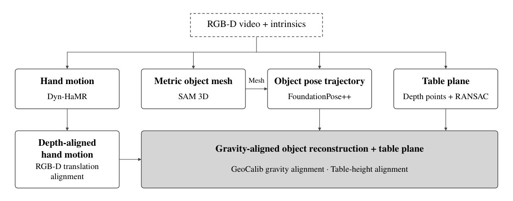
怎么读这张图
- 顶部虚线框 “RGB-D video + intrinsics”：输入；例子里是下面那段 sweep 视频。
- 四个分支：“Hand motion / Dyn-HaMR”、“Metric object mesh / SAM 3D”、“Object pose trajectory / FoundationPose++”（Mesh 箭头：拿 SAM 3D 的 mesh 去跟踪）、“Table plane / Depth points + RANSAC”。
- 左下 “Depth-aligned hand motion”：用观测深度修正手的平移。
- 灰色大框 “Gravity-aligned object reconstruction + table plane”：GeoCalib 重力对齐 + 桌面高度对齐，输出 τ̂。
flowchart LR M["GRAB mocap
s1_hammer_use_1"] --> T["HOI reference τ̂
353 帧 + 锤子 mesh"] V["RGB-D 视频
sweep，4.42 s"] --> RC["重建（Fig. 7）
手、物体、桌面、重力"] RC --> T2["HOI reference τ̂
265 帧 + sweep mesh"]
Running example 在这一步
锤子 clip 来自 GRAB mocap，跳过重建：τ̂ = 353 帧（5.88 s）的腕、MANO 手和锤子位姿，加锤子 mesh。
…然后第二段 clip 来了：一段随手拍的 RGB-D 视频，人在用 sweep（手持小刷子，265 帧 / 4.42 s，Table 6）。走 Fig. 7 的流程得到它的 τ̂，之后 Stage 2–6 不变；这个 sweep skill 后来在真机上做了 in-hand gait switching（§4.4）。
Stage 2 Retarget MANO 手参数 → 各种机器人手的初始关节和腕位姿
- Why：τ̂ 是人手（MANO），policy 控制的是机器人手；reference state initialization 要用机器人手的关节角。
- How：基于 interaction mesh 的 kinematic retargeting（参考 OmniRetarget 和 Feng et al. 2026），把 MANO 参数变成各 embodiment 的关节位置和腕位姿（App. D）。
- retarget 结果只用于初始化；tracking reward、termination 都直接用 MANO link，靠每种手的 MANO → 机器人一对一映射（App. D）。
- 手：Arti-MANO（22-DoF 浮动手 + 6-DoF 腕，定量实验都用它）、XHAND、Wuji、Sharpa、XHAND + xArm（§4.1、Fig. 5）。
flowchart LR a["MANO 手参数
锤子 clip 每帧"] --> b["Interaction-mesh retarget
MANO → 机器人手"] b --> c["初始化用的状态
Arti-MANO 22-DoF"] a --> d["Reward、termination
直接用 MANO link"]
Running example 在这一步
锤子 clip 的人手 → Arti-MANO 的初始关节和腕位姿。项目页里同一个 hammering skill 也在 Sharpa、Wuji、XHand 上学成，方法不改。
Stage 3 TrackEnv τ̂ + 小噪声初始化 → 人的做法（human prior）
- Why：补 goal-reaching RL 缺的“怎么做”：怎么接近物体、用哪种抓法、怎么 finger gaiting、何时松手（§3.2.1）。
- RSI：随机采起始帧 t₀，用 τ̂ 在 t₀ 的手、腕、物体位姿加小噪声初始化，动作的每个阶段并行学。
- Adaptive sampling：t₀ 分进 B 个 bin，按成功率方差采样 P(b) ∝ σ(s_b) + ε：太易和没希望的 bin 少采，前沿多采（B 的值论文没给）。
- Goal：g_t = τ̂ 往前看 k 帧的腕和物体位姿（Eq. 5），k 步后重采（k 的值论文没给）。
- Dense reward：物体位姿权重最大；再加腕、MANO link、速度匹配、指尖 contact reward（由 reference 的指尖-物体距离得出）和正则项（Eq. 6、Table 5）。
- 严格 termination：物体、腕或 MANO link 偏出 τ̂ 周围的窄带，或物体掉落、出界就结束；阈值先除以 0.7（更宽），这个系数逐步升到 1.0，termination 越来越严（App. C.4）。
- Stage I 早期重力小、摩擦大，之后逐步恢复正常（App. C.4）。
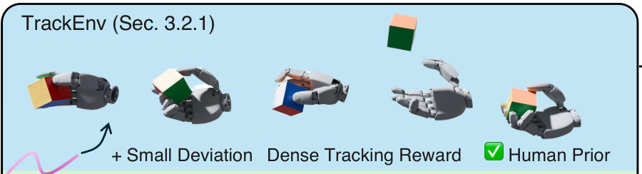
- 左下粉色曲线 τ̂ 和 “+ Small Deviation”：起点在 reference 附近，只加小噪声。
- 一排手和方块：reference 的不同阶段（图里是方块的抓起、翻转、抛起、接住），对应 RSI 的不同 t₀。
- “Dense Tracking Reward” → “✓ Human Prior”：每一步都按人的动作打分，学到的是人的做法。
flowchart LR a["RSI + adaptive bin
t₀ 取自 353 帧"] --> b["Goal：τ̂ 的 t+k 帧
人手当时的锤子位姿"] b --> c["Dense reward
锤子、腕、手指、接触"] c --> d["严格 termination
偏出窄带就重来"]
Running example 在这一步
每个 TrackEnv 从锤子 clip 的某一帧开始，goal 是 k 帧后人手和锤子的位姿；手指偏离人的握法就少得分，偏太多就结束。§1 说 tracking 由此继承人的 functional grasp、in-hand regrasp 和挥锤。
Stage 4 GenEnv 大噪声初始化 + 随机挪过的 goal → 泛化（generalization）
- Why：补 motion tracking 缺的泛化：逼 policy 从偏离 reference 的状态出发，去偏离 reference 的目标（§3.2.2）。
- 初始化：t₀ 均匀采样（不用 adaptive），物体和手的噪声大得多，起点离 τ̂ 很远。
- Goal：τ̂ 往前看 k 帧的腕和物体位姿，再复合一个随机 SE(3) 变换 ε（Eq. 7–8）；噪声幅度 Δp、ΔR 可以很大，具体值论文没给。
- Goal 链：到达一个 goal 就从新的 look-ahead 帧再采一个，一个 episode 串起多次移动。
- Reward：sparse 物体成功（每个 goal +20，最后一个再 +50）+ dense 腕部引导 + 正则；没有手指项（Eq. 9、Table 5）。
- Termination：连续 30 步（0.5 s）没到 goal、物体离 goal 超过 50 cm（前 8 步宽限）、或腕离物体超过 30 cm 持续 3 s（App. C.4）。
- 为什么泛化又像人：只做 goal reaching 时，大噪声会把 policy 推向最先找到的不自然手指策略；这里 TrackEnv 一直把共享 actor 拉回人的动作流形，GenEnv 要它把流形拉伸到新状态和新 goal（§3.2.2）。
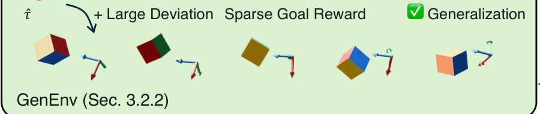
- “τ̂ + Large Deviation”：起点离 reference 很远。
- 方块旁的三色坐标轴：被随机挪过的目标位姿，方块要转到那里。
- “Sparse Goal Reward” → “✓ Generalization”：只看物体到没到，手指怎么动不直接打分。
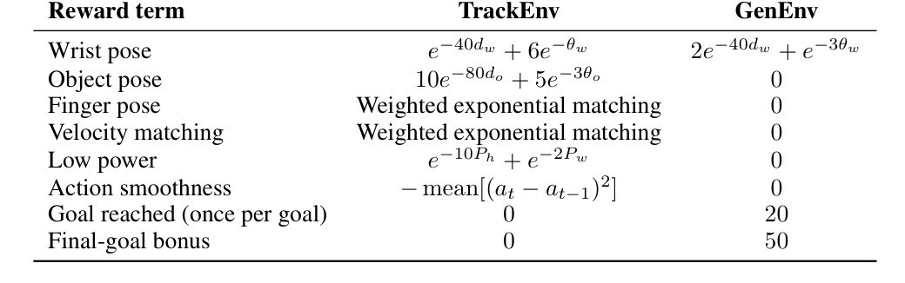
- Object pose 一行：TrackEnv 是 dense 项，GenEnv 是 0；GenEnv 里物体只靠 “Goal reached” 的 20 和 “Final-goal bonus” 的 50 得分。
- Finger pose、Velocity matching：只在 TrackEnv 里有，手指的做法全来自 TrackEnv。
- Wrist pose：两边都有，在 GenEnv 里起引导作用。
flowchart LR a["大噪声初始化
锤子远离 clip 状态"] --> b["Goal：t+k 帧 ⊕ ε
锤子目标被随机挪"] b --> c["Sparse 成功 + 腕引导
到位 +20，最后 +50"] c --> d["换下一个 goal
一个 episode 多次"]
Running example 在这一步
同一个锤子 skill，但锤子从偏离 clip 的状态开始，锤子的目标位姿被随机平移、旋转（好比钉子换了位置）；只有锤子到位才给分。因为同一个 actor 也在 TrackEnv 里练，它会用人的握法去够新目标，而不是抓锤头（§3.2.2 的论证，论文没单独测锤子）。
Stage 5 Coding agent 出 goal 任务 → 腕 + 物体位姿 waypoints → skill 执行
- Why：推理只要 goal，高层计划就能交给 VLM coding agent：agent 低频出计划，skill 高频执行（§4.3）。
- How：VLM agent（Codex w/ GPT-6 Astra）为 skill 生成一串 waypoints g_t = (gʷ_t, gᵒ_t)，t = 0, 1, 2, …（§4.3）。
- 五个任务（App. G）：Hammer（拿起桌上的锤子，敲两个不同位置的钉子）、MugPour、Marker（转笔后在白板写 AdaDex）、Sweep（把方块扫进 dustbin）、PanToss。
- 跑在多种手上：Arti-MANO、XHAND、Wuji、Sharpa、XHAND + xArm（Fig. 5）。
- 论文没给 agent 的 prompt，也没给任务成功率；证据是 Fig. 5 和项目页视频。
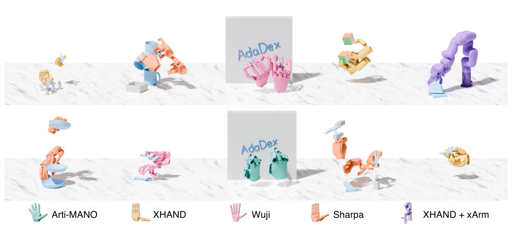
- 底部图例：五种 embodiment：青 Arti-MANO、黄 XHAND、粉 Wuji、橙 Sharpa、紫 XHAND + xArm。
- 下排第四格：橙色 Sharpa 拿锤子，旁边是灰色小柱，看起来就是 Hammer 任务（图里没标任务名）。
- 两块 “AdaDex” 白板：Marker 任务，上排 Wuji、下排 Arti-MANO 在写字。
- 其他格：上排 Sharpa 拿杯子（MugPour）、XHAND 抛接方块、紫色 xArm 拿刷子和簸箕（Sweep）；下排左 Sharpa 拿平底锅（PanToss）。
flowchart LR a["任务
敲两个不同位置的钉子"] --> b["Coding agent
Codex w/ GPT-6 Astra"] b --> c["Waypoints g₀, g₁, …
腕 + 锤子位姿"] c --> d["锤子 skill
逐个去够"]:::win
Running example 在这一步
Hammer 任务：agent 把“拿起锤子、敲钉子 A、再敲钉子 B”写成一串腕 + 锤子位姿（这种拆法是推断，论文只说 agent 生成 waypoints）。钉子位置不在人手 clip 里，靠的是 GenEnv 练出的泛化。
Stage 6 Sim2Sim / Sim2Real Isaac Gym 里的 policy → MuJoCo、真实 xArm6 + XHand（30 Hz）
- Why：证明学到的动作物理上可行，不只是仿真里的动画（§4.4、App. G）。
- Sim2Sim：Isaac Gym 训练的 policy 零样本、闭环导入 MuJoCo（§4.4）。
- 仿真侧准备：system identification、domain randomization、sim2sim 检查；真机版训练时，动作前 6 维改成 xArm6 六个关节的增量（§3.3、App. C.1）。
- 真机开环：按 1x 速度（30 Hz）回放 policy 在仿真里生成的关节目标。
- 真机闭环：FoundationPose（物体 mesh、RGB、Fast-FoundationStereo 深度）实时估物体位姿；policy 输入 RMA 编码的本体历史、BPS、当前和目标的物体 / 腕位姿，30 Hz 推理。
- 真机测了 GRAB 的 apple、hammer、cup 和 real2sim 的 sweep、两个 AprilCube；没报成功率。
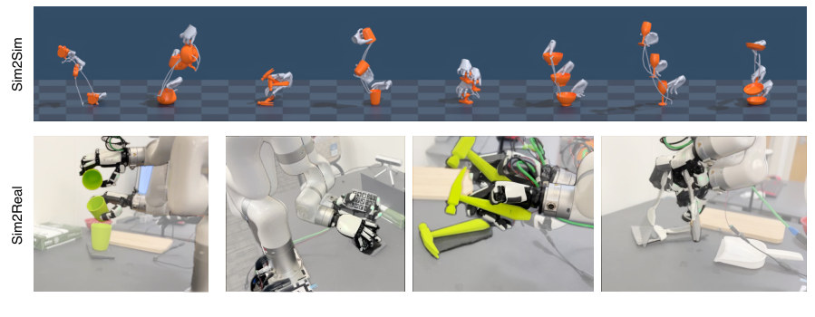
- 上排 “Sim2Sim”：同一个 policy 在 MuJoCo 里的 rollout。
- 下排 “Sim2Real” 从左到右：倒绿色杯子、手里转贴码的方块（AprilCube）、抓黄绿色细锤子、sweep 的 in-hand gait switching。
- 第三格就是例子里的锤子：§4.4 说的 “functional grasping of a thin hammer”。
flowchart LR a["Isaac Gym policy
锤子 skill"] --> b["Sim2Sim
MuJoCo 零样本"] a --> c["真机开环
回放关节目标 30 Hz"] a --> d["真机闭环
FoundationPose 30 Hz"]
Running example 在这一步
锤子 skill 原样放进 MuJoCo，仍能做 Hammer · use（项目页 sim2sim 视频）；真机上 xArm6 + XHand 抓起黄绿色细锤子，开环、闭环各有视频（Fig. 6、项目页），没有成功率数字。
All stages 共享 policy 和 goal 接口 (状态 s, goal g) → 动作 a；训练、agent 规划、真机用的都是它
- Why：核心观察：tracking 和 goal reaching 都是“把物体和腕带到目标位姿 g”，只差 g 从哪来、奖励怎么给（§3.2）；所以一个 actor 能被两种环境一起训，部署时 g 来自哪都行。
- State：关节位置、机器人腕位姿和速度、物体位姿、BPS 物体形状编码，没有特权信息（Eq. 2）。
- Goal：g = (目标腕位姿, 目标物体位姿) ∈ SE(3) × SE(3)；推理不需要 τ̂（§3.1）。
- Action：6-DoF 腕部增量 + n 个手指的绝对目标（Arti-MANO 是 22），EMA（α = 0.4）滤波后当 PD 目标（App. C.1）。
- 目标函数：比例 p 的环境是 TrackEnv、1 − p 是 GenEnv，一个 π_θ 用 PPO 在两者 rollout 的并集上优化（Eq. 4）。
- Asymmetric critic：critic 另看特权状态（接触力、物体速度、COM、重量）和 τ̂；GenEnv 里 τ̂ 置零，critic 不用任务标记也能分清两种环境。
- 两阶段 curriculum：Stage I 全是 TrackEnv（1.0 / 0.0）；Stage II 从 Stage I 初始化，两种各一半（0.5 / 0.5）（Table 4）。
- 规模：Isaac Gym 每张 GPU 8,192 个并行环境，MLP [1024, 1024, 512]，每阶段最多 20k iteration，单张 RTX 4090 约 1–2 天（App. C.2）。
flowchart LR T["TrackEnv
g = clip 里的锤子位姿"] --> A["共享 actor π(a | s, g)
锤子 skill"]:::win G["GenEnv
g = 挪过的锤子位姿"] --> A D["部署
g = agent 的 waypoint"] --> A
Running example 在这一步
锤子 skill 从头到尾只有这一个 policy：Stage I 只练 TrackEnv（先学会人怎么握锤、挥锤），Stage II 一半 TrackEnv、一半 GenEnv。部署时它只看当前状态和下一个腕 + 锤子目标，看不到那段 5.88 s 的 clip。
Recap：例子覆盖了论文的哪些 idea
| 论文里的 idea | 例子里在哪体现 |
|---|---|
| Tracking 和 goal reaching 是同一个 goal-conditioned 问题（§3.2） | 共享 policy：锤子 skill 的 g 依次来自人手 clip、挪过的目标、agent 的 waypoint |
| 推理不需要 dense reference（§3.1） | Stage 5–6：部署时锤子 skill 看不到 5.88 s 的 clip |
| Real2Sim HOI 重建（§3.3、App. B） | Stage 1：第二段 clip，sweep 的 RGB-D 视频 |
| Kinematic retargeting 到多种手（App. D） | Stage 2：MANO → Arti-MANO；hammering 也在 Sharpa、Wuji、XHand 上学成 |
| TrackEnv：RSI、adaptive sampling、dense reward、严格 termination（§3.2.1） | Stage 3：沿锤子 clip 学握法、换握、挥锤 |
| GenEnv：大噪声、SE(3) 挪动的 goal、goal 链、sparse reward、无手指项（§3.2.2） | Stage 4：锤子目标被随机挪，只看锤子到没到 |
| Asymmetric critic、两阶段 curriculum（§3.2、App. C） | 共享 policy：Stage I 只练 TrackEnv，Stage II 各一半 |
| Downstream 任务由 coding agent 出 waypoints（§4.3、App. G） | Stage 5：Hammer 任务敲两个不同位置的钉子 |
| Sim2Sim、Sim2Real（§4.4） | Stage 6：MuJoCo 里的 Hammer · use，真机抓黄绿色锤子 |
| 主结果（Table 1–2、Fig. 4） | Results：hammer 是 12 个 GRAB 物体之一，数字是平均 |
Results
结果一览
- 80.02% 没见过的相似动作上的 tracking progress；ManipTrans 7.28%，SimToolReal 13.68%，只用 TrackEnv（w/o GenEnv）31.75%（Table 1 setting ii）：泛化来自 GenEnv。
- 96.74% 训练过的动作上的 progress，只比 w/o GenEnv 的 97.47% 低不到 1%（Table 1 setting i）：加 GenEnv 几乎不损跟踪。
- 51.80% random goal progress，高于专门为此训练的 SimToolReal（44.60%，+7.20%）；但 SR 27.08% 低于它的 31.71%（−4.63%）（Table 2）。
- 8.45% w/o TrackEnv 在训练过的动作上的 progress，random goal 也只有 4.34%（Table 1–2）：没有 TrackEnv 的先验和探索，sparse reward 很难单独学会（§1 的论证）。
- 80.53% 9 段 real2sim 动作的平均 tracking progress，ManipTrans 31.70%（Fig. 4）。
- 0.97 s 每帧 HOI 重建时间，Do-As-I-Do 76.04 s、EgoInfinity 27.06 s；DexYCB 和 HO3D 上 MPJPE、CD_h 都最低（Table 3）。
- 评测设置：12 个 GRAB 物体（hammer 是其一），每个物体只用 1 段动作训练、另 2 段做 unseen 测试；每段 128 次 rollout；定量实验都用 22-DoF Arti-MANO（§4.1）。
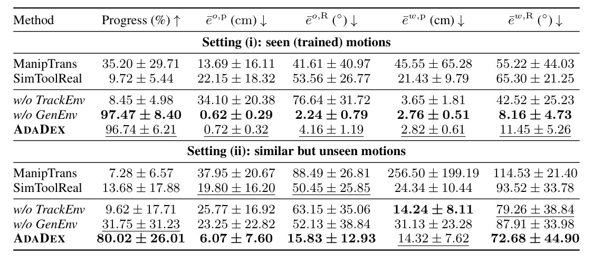
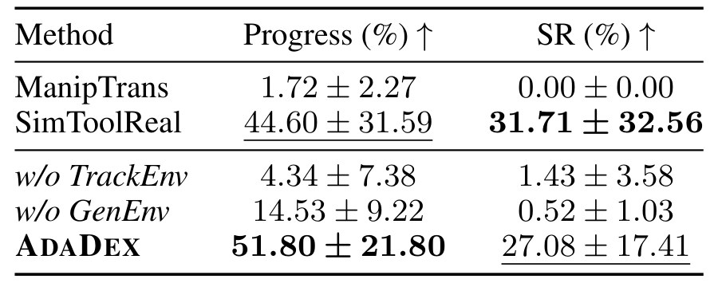
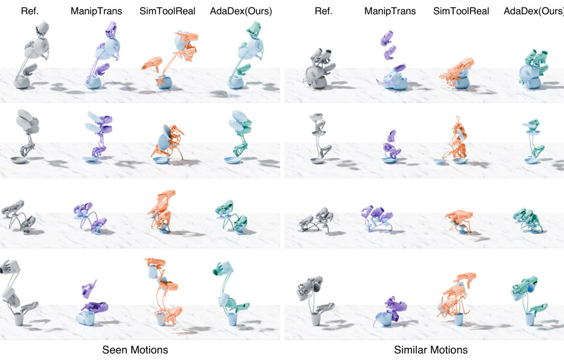
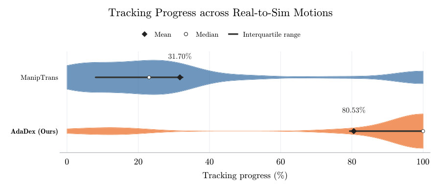
Limits
局限和开放问题
- 每个物体、每条 reference 单独训一个 policy；一个 policy 覆盖多物体、多动作留作未来工作（App. H）。
- 物体只用 6-DoF pose + BPS 形状编码，articulated、deformable 物体还做不了（App. H）。
- random goal 的 SR 27.08%，低于 SimToolReal 的 31.71%（Table 2）；没见过的动作上腕朝向误差仍有 72.68°（Table 1，这条是我们的观察）。
- Downstream 任务和真机只有视频，没报成功率；coding agent 的 prompt 也没公开（§4.3–4.4）。
- 每个 skill 两阶段训练，每阶段在单张 RTX 4090 上约 1–2 天（App. C.2）。
- Real2Sim 假设物体是刚体，桌面区域要人手框选（App. B.1）。
For Robot learning in simulation
对我们有什么用
- Robotic-harness：AdaDex 的分工是 coding agent 低频出腕 + 物体位姿 waypoints、skill 高频执行（§4.3）；harness 的 Codex / Claude Code policy 若接多指手，可以只输出这种 goal 序列，Supervisor 也只需审 goal（我们的设想）。
- Agent-centric-real-to-sim：App. B 的 RGB-D HOI 重建（Dyn-HaMR + SAM 3D + FoundationPose++ + GeoCalib，0.97 s/帧）可以给 real2sim-anything-indoor 补上手和物体的交互，那边目前用 GVHMR 出人体动作。
- 仿真迁移：policy 在 Isaac Gym 训、零样本进 MuJoCo；同样的 sim2sim 检查可以用来看 skill 能否搬进 WorldClaw 的 Genesis 或 harness 跑的 RoboTwin / LIBERO / RoboDojo（论文只测了 MuJoCo）。